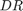
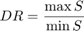
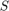

OCT B-Scan Statistical Evaluation
The following functions process and evaluate basic statistics for each segment in a segmented OCT B-Scan, including mean, standard deviation and dynamics range , defined as

where  is the summation signal vector, confined to the maximal blood vessel. is defined as the sum for each column in the image, from the left edge of the vessel to its right. Maximality is defined according to the average of . By default, the blood vessel signals are removed from mean and standard deviation computations. This could be altered in the code, to either skip the vessel removal or using only the isolated vessel signal, as described below in computeStats.
This program makes use of the functions findpeaksG and finsqaurepulse by Thomas C. O'Haver (2014). See Interactive Signal Processing Tools for further information on these functions.
This program assumes image files exported from Heidelberg Engineering software, and requires each image to be given both in segmented and unsegmented form.
Contents
Copyright and License Notices
This file is part of "Assessing the Effect of Contact Lenses on the Image Quality of Retinal Spectral Domain Optical Coherence Tomography Using Automated Image Analysis" by Yinon Shapira, Talia Aviram, Omer Granak, Igor Viner, Erez Ribak, Eitan Z Blumenthal (2018).
Copyright © 2017, 2018 Omer Granek
This program is free software: you can redistribute it and/or modify it under the terms of the GNU General Public License as published by the Free Software Foundation, either version 3 of the License, or (at your option) any later version.
This program is distributed in the hope that it will be useful, but WITHOUT ANY WARRANTY; without even the implied warranty of MERCHANTABILITY or FITNESS FOR A PARTICULAR PURPOSE. See the GNU General Public License for more details.
You should have received a copy of the GNU General Public License along with this program. If not, see http://www.gnu.org/licenses/.
evaluateB
evaluateB computes standard deviation of segmented retinal cuts. Assumes the defined constants below.
- current - unsegmented cut image
- marked - segmented cut image
- bottom - row number for the boundary of relevant part
- means - mean vector from top to bottom, 4 sections total
- stds - standard deviation vector from top to bottom, 4 sections total
- DR - dynamic range scalar
- h - figure handle
function [ means, stds, DR, h ] = evaluateB( current, marked, bottom,...coc cutStat ) % Constants SIDE = 512; SIDE_MAX = 1008; FONT_HEIGHT = 10; FONT_WIDTH = 20; DELTA = 100; % Intialize standard deviations vector % Default value is 0 contribution to total stds = NaN(1,4); means = NaN(1,4); h = gobjects(1,1); DR = 0; % Reduce to cut reduced = current(1:bottom,(SIDE_MAX - SIDE + 1):SIDE_MAX,:); reducedMarked = marked(1:bottom,(SIDE_MAX - SIDE + 1):SIDE_MAX,:); % Remove yellow markings unyellowed = removeYellowMarkings(reducedMarked); % Flatten image gray = rgb2gray(reduced); grayMarked = rgb2gray(reducedMarked); grayUnyellowed = rgb2gray(unyellowed); % Extract red pixels and remove labels red = squeeze(reducedMarked(:,:,1))-grayMarked; redUnyellowed = squeeze(unyellowed(:,:,1))-grayUnyellowed; if (max(red(:)) == 0) h = figure; h.Visible = 'off'; return; end red = removeLabels(red, FONT_HEIGHT, FONT_WIDTH, bottom, SIDE); red = sqrt(double(red .* redUnyellowed)); % Obtain boundaries boundaries = findBoundaries(red, gray, SIDE, bottom, DELTA); % Find retinal blood vessels [vesselCut1D, maxVesselPos] = getVesselCut1D(gray, SIDE, bottom,... boundaries(2:3,:)); vesselCut = bottom * vesselCut1D; % Compute standard deviation for each domain [means, stds] = computeStats(vesselCut, boundaries, gray, bottom, SIDE,... cutStat); % Compute dynamic range for the maximal vessel if (maxVesselPos(1) ~= 0) maxVesselVec = maxVesselPos(1) : maxVesselPos(2); maxVesselProfile = sum(gray(:,maxVesselVec)); DR = max(maxVesselProfile) / min(maxVesselProfile); %dynamics range if (isempty(DR) || isnan(DR) || isinf(DR)) DR = 0; end end % Plot the results figure; imagesc(gray); hold on; plot(boundaries','r'); plot(vesselCut,'g'); h = gcf; h.Visible = 'off'; end
removeYellowMarkings
removeYellowMarkings removes any yellow markings present in matrix I . Returns the matrix Iunyellowed .
function [ Iunyellowed ] = removeYellowMarkings( I ) H = rgb2hsv(I); red = logical(H(:,:,1)); H(:,:,3) = H(:,:,3).*(~red); Iunyellowed = im2uint8(hsv2rgb(H)); %remove non periodic red elements end
removeLabels
removeLabels removes two labels from red ( bottom X side ) at size ( fontHeight X fontWidth ).
function [ red ] = removeLabels( red, fontHeight,... fontWidth, bottom, side ) redLogical = logical(red); numOfNonZeros = sum(sum(redLogical)); nonZeros = zeros(numOfNonZeros,2); [nonZeros(:,1), nonZeros(:,2)] = find(redLogical); for k = 1:2 %two labels maxSum = 0; maxVerts = zeros(1,4); for i = 1:size(nonZeros,1) %sweep through all nonzeros and find max sum currentHeight = min(fontHeight, bottom - nonZeros(i,1) + 1); currentWidth = min(fontWidth, side - nonZeros(i,2) + 1); verts = [nonZeros(i,1), (nonZeros(i,1) +... currentHeight - 1), nonZeros(i,2), (nonZeros(i,2)... + currentWidth - 1)]; %vertices currentSum = sum(sum(redLogical(verts(1):verts(2),... verts(3):verts(4)))); if (currentSum > maxSum) maxSum = currentSum; maxVerts = verts; end end %remove the rectangle of the max sum maxHeight = maxVerts(2) - maxVerts(1) + 1; maxWidth = maxVerts(4) - maxVerts(3) + 1; red(maxVerts(1):maxVerts(2),maxVerts(3):maxVerts(4)) =... zeros(maxHeight,maxWidth); redLogical(maxVerts(1):maxVerts(2),maxVerts(3):maxVerts(4)) =... zeros(maxHeight,maxWidth); end end
findBoundaries
findBoundaries finds the boundaries for each domain in red ( bottom X side ) using gray ( bottom X side ). Boundary #3 is given at delta range from #2.
function [ boundaries ] = findBoundaries( red, gray, side, bottom, delta ) errorThreshold = 70; boundaries = zeros(5,side); boundaries(5,:) = ones(1,side)*bottom; %bottom boundary upperMean = zeros(1,side); for j = 1:side %obtain middle boundaries from red segmentation col = red(:,j); nonZeros = find(col); meanCurve = floor(mean(nonZeros)); if(~isempty(find(nonZeros == meanCurve,1)) || isempty(nonZeros)) %segment termination boundaries(2,j) = bottom; boundaries(3,j) = bottom; else boundaries(2,j) = find(col(1:meanCurve),1); boundaries(3,j) = find(col((meanCurve+1):end),1) + 3; boundaries(3,j) = boundaries(3,j) + meanCurve; diffs = [diff(boundaries(2,[max(1,j-1) j]))... diff(boundaries(3,[max(1,j-1) j]))]; if(diffs(1) > 20 && (max(boundaries(2,[max(1,j-1) j]) < (bottom-50)))) boundaries(2,j) = boundaries(2,max(1,j-1)); end if(diffs(2) > 20 && (max(boundaries(3,[max(1,j-1) j]) < (bottom-50)))) boundaries(3,j) = boundaries(3,max(1,j-1)); end end %obtain top boundary from noise presence col = gray(:,j); nonZeroFirst = find(col,1,'first'); if(isempty(nonZeroFirst) || boundaries(2,j) == bottom) boundaries(1,j) = bottom; else boundaries(1,j) = nonZeroFirst; end %compute mean of upper segment for error identification upperMean(j) = mean(gray((boundaries(1,j)+1):(boundaries(2,j)-1),j)); if(isnan(upperMean(j))) upperMean(j) = errorThreshold + 1; end end %identify error in upper segment marking boundaries(1,upperMean > errorThreshold) = bottom; %interpolate missing segments due to removal of yellow markings for i = 2:3 first = find(boundaries(i,:) < bottom,1,'first'); last = find(boundaries(i,:) < bottom,1,'last'); for j = first : last; if(boundaries(i,j) == bottom) nodes = find(boundaries(i,j:last) < bottom); currentNode = 1; numOfNodes = length(nodes); absVar = 20; while((absVar >= 20) && currentNode <= numOfNodes) next = j-1+nodes(currentNode); absVar = abs(diff(boundaries(i,[j-1 next]))); currentNode = currentNode + 1; end boundaries(i,(j-1):next) = interp1([j-1 next],... boundaries(i,[j-1 next]), (j-1):next); if(i == 2) boundaries(i - 1,(j-1):next) = interp1([j-1 next],... boundaries(i - 1,[j-1 next]), (j-1):next); end end end end boundaries(4,:) = boundaries(3,:) + delta; %secondary boundary %diminish sensitivity to noise by applying median filter to top boundary linear_segment = boundaries(1,:); indexes = (linear_segment - mean(linear_segment)) < 50; %ignore sides linear_segment = linear_segment(indexes); linear_segment = medfilt1(linear_segment,9); %9th order filter boundaries(1,indexes) = linear_segment; end
getVesselCut1D
getVesselCut1D finds retinal blood vessels in gray ( bottom X side ) with a boundaries matrix (see findBoundaries), and returns a cut vector. It also reutrns the vector maxVesselsPos, containing the left and right edges of the vector of maximal average depth.
function [ cut, maxVesselPos ] = getVesselCut1D( gray, side, bottom, ... boundaries ) meanCurveRaw = zeros(1,side); xVec = 1:side; boundaries = uint16(boundaries); %find the mean of the brightest layer for j = 1:side meanCurveRaw(j) = mean(gray((boundaries(2,j)-15):boundaries(2,j),j)); end I = (boundaries(2,:) ~= bottom); meanCurve = meanCurveRaw(I); xVec = xVec(I); meanCurve = max(meanCurve) - meanCurve + 1; extension = mean(meanCurve) * ones(1,10); meanCurve = [extension meanCurve extension]; xVec = [(xVec(1)-10):(xVec(1)-1) xVec (xVec(end)+1):(xVec(end)+10)]; %detect valleys - gaussian drop in saturation and canyons - a wide drop due %to high dot product between the blood vessel and the section valleys = findpeaksG(xVec,meanCurve,0.33305,15.7031,8,8,3); canyons = findsquarepulse(xVec,meanCurve,90); if(max(valleys(:,4)) > 75) valleys = findpeaksG(xVec,meanCurve,0.33305,15.7031,7,8,3); end %create the cut vector from detection outputs cut = false(1,side); maxValleysIntegrals = zeros(1,3); maxCanyonsIntegrals = zeros(1,3); for i = 1:size(valleys,1) left = max([round((valleys(i,2) - valleys(i,4)/2)), 1]); right = min([round((valleys(i,2) + valleys(i,4)/2)), side]); cut(left:right) = true(1,right - left + 1); valleysIntegral = sum(meanCurveRaw(left:right)); if (valleysIntegral > maxValleysIntegrals(2)) maxValleysIntegrals = [left, right, valleysIntegral]; end end for i = 1:size(canyons,1) left = max([(canyons(i,2)), 1]); right = min([(canyons(i,2) + canyons(i,4)), side]); cut(left:right) = true(1,right - left + 1); canyonsIntegral = sum(meanCurveRaw(left:right)); if (canyonsIntegral > maxCanyonsIntegrals(2)) maxCanyonsIntegrals = [left, right, canyonsIntegral]; end end if (maxValleysIntegrals(3) > maxCanyonsIntegrals(3)) maxIntegral = maxValleysIntegrals; else maxIntegral = maxCanyonsIntegrals; end maxVesselPos = [maxIntegral(1) min(maxIntegral(2),side)]; end
computeStats
computeStats computes the mean and stds (standard deviations) vector for an image gray ( bottom X side ) with a boundaries matrix and a vesselCut (see findBoundaries and getVesselCut1D). This function can be modified to skip blood vessel removal or to use only the isolated blood vessel signal, see inline documentation below.
function [ means, stds ] = computeStats( vesselCut, boundaries, gray,... bottom, side, cutStat ) stds = NaN(1,4); means = NaN(1,4); rows = 1:bottom; for k = 1:4 domain = []; for j = 1:side vesselsToRemove = (rows > vesselCut(j)); switch cutStat %cutStat==0 => no cut, ==1 =>with cut, ow => only cut case 0 indexes = (rows > boundaries(1,j)) &... (rows > boundaries(k,j) + 1) &... (rows < boundaries(k + 1,j) - 1); case 1 indexes = (rows > boundaries(1,j)) &... (rows > boundaries(k,j) + 1) &... (rows < boundaries(k + 1,j) - 1) & vesselsToRemove; otherwise indexes = (rows > boundaries(1,j)) &... (rows > boundaries(k,j) + 1) &... (rows < boundaries(k + 1,j) - 1) & ~vesselsToRemove; end domain = [domain; gray(indexes,j)]; end stds(k) = std(cast(domain,'double')); means(k) = mean(cast(domain,'double')); end end